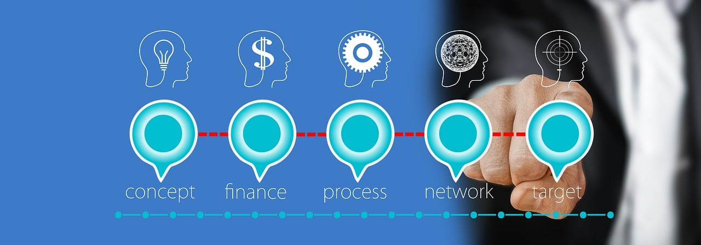

¿Tu empresa necesita ayuda?
Si te identificas con alguna de estas situaciones, es momento de actuar:

Tu empresa no genera utilidades suficientes
Estás atravesando una crisis y necesitas soluciones urgentes

No te alcanza para pagar la nómina
Necesitas automatizar tus procesos

Quieres reducir la nómina sin perder calidad

Faltan objetivos claros y procesos definidos
No sabes cómo integrar inteligencia artificial

No tienes claridad de tus flujos